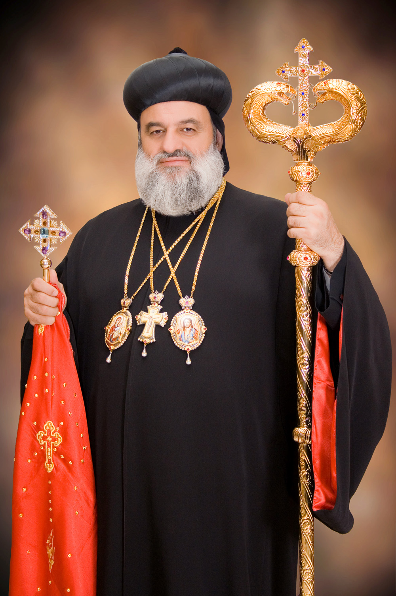
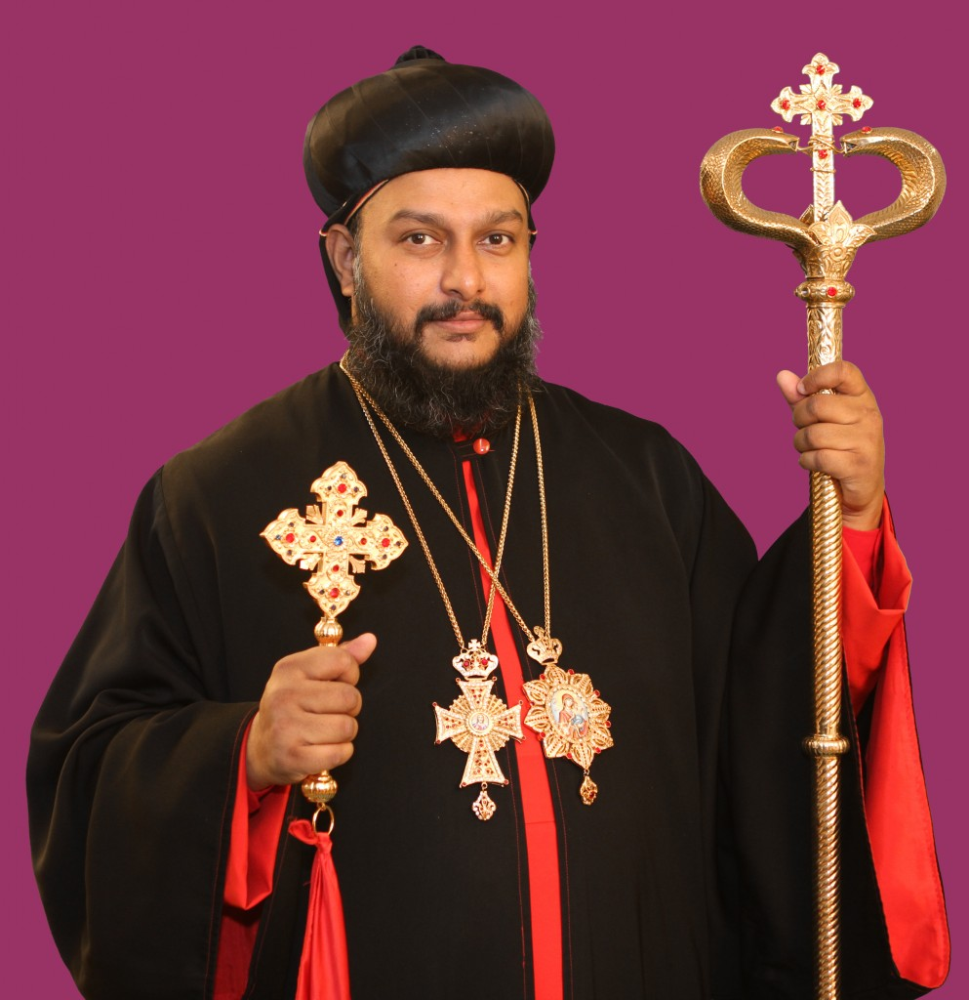

OUR SPIRITUAL FATHERS

Moran Mor Ignatius Aphrem II
122nd Successor of St. Peter in the Apostolic See of Antioch and All the East, and Supreme Head of the Universal Syrian Orthodox Church
His Holiness Moran Mor Ignatius Aphrem II was born in Kamishly, Syria on May 3, 1965, and pursued his theological education across multiple institutions, earning his Doctor of Divinity from St. Patrick's College in Ireland. Before his election to the patriarchate, he served as Archbishop for the Eastern United States of America, where he established numerous parishes and vital ministries including youth organizations and educational programs. He became the 123rd Syriac Orthodox Patriarch of Antioch when he was enthroned as Patriarch in Damascus on May 29, 2014. A accomplished scholar fluent in Syriac, Arabic, French, and English, His Holiness has authored numerous theological works and serves on the Executive Committee of the World Council of Churches. As our Supreme Spiritual Head, he continues to guide the global Syriac Orthodox Church while fostering Christian unity through ecumenical leadership. His pastoral care and scholarly depth ensure the preservation of our ancient traditions while meeting the spiritual needs of Orthodox communities worldwide.

His Beatitude Aboon Mor Baselios Joseph
Catholicos of the Malankara Archdiocese of the Syrian Orthodox Church in India
Aboon Mor Baselios Joseph is the current Catholicos of India of the Malankara Syriac Orthodox Church. He also serves as the Metropolitan of the Kochi Diocese and Angamali Diocese. He was elevated as Catholicos of India by Ignatius Aphrem II on 25 March 2025, at St. Mary's Cathedral, Atchaneh, Lebanon with the name Baselios Joseph. He was enthroned on 30 March 2025, at Mar Athanasius Cathedral, Puthencruz.

His Eminence Archbishop Mor Titus Yeldho
Archbishop and Patriarchal Vicar of the Malankara Archdiocese of the Syrian Orthodox Church in North America
His Eminence Mor Titus Yeldho was born in 1970 in India and was ordained as a deacon at age 12, later receiving his theological education at seminaries in Damascus, Syria and India. He earned degrees in Mathematics and Education before pursuing advanced theological studies, including a Master of Divinity from St. Vladimir's Orthodox Theological Seminary in New York in 2003. After serving churches in both India and the United States, he was consecrated as Archbishop and Patriarchal Vicar of the Malankara Archdiocese in North America on January 4, 2004, by His Holiness Patriarch Moran Mor Ignatius Zakka I Iwas in Damascus, Syria. During the consecration ceremony, he was given the Episcopal name 'TITUS' and pledged his faithful service to the Holy Syriac Orthodox Church. His Eminence continues to serve as our beloved Archbishop while pursuing doctoral studies, providing pastoral leadership to the Syriac Orthodox communities across North America.